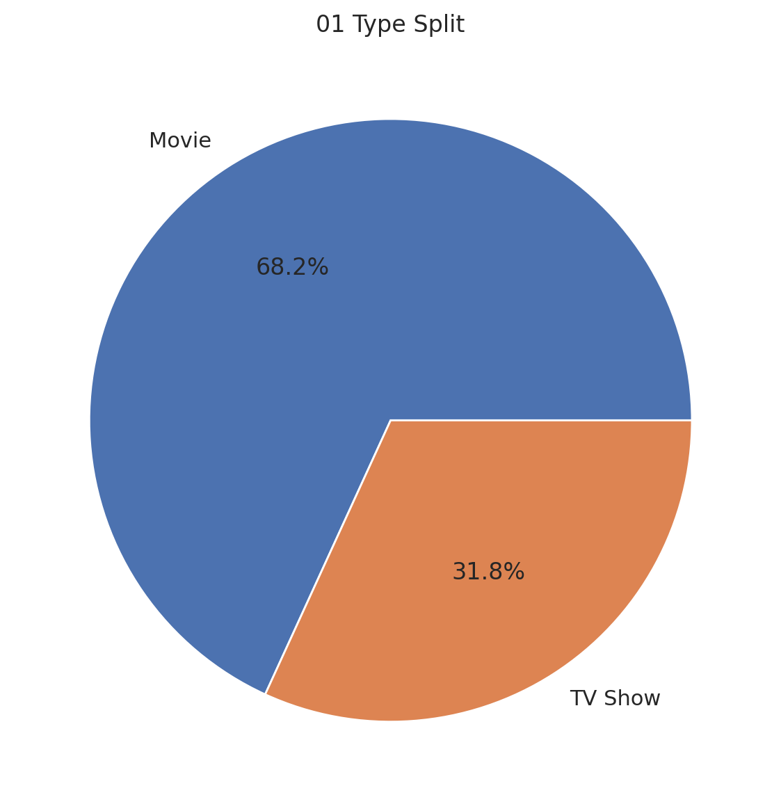
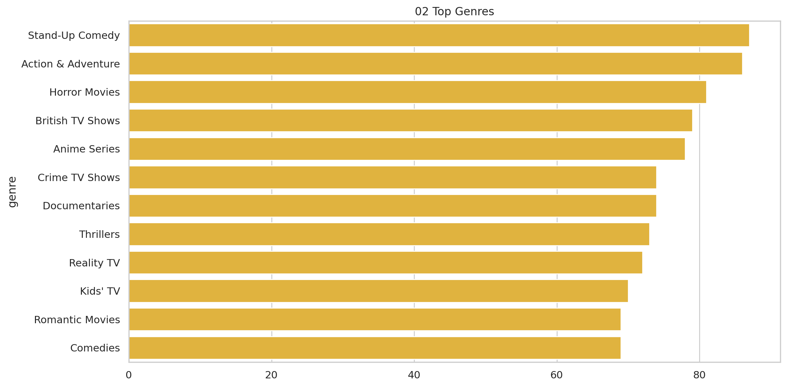
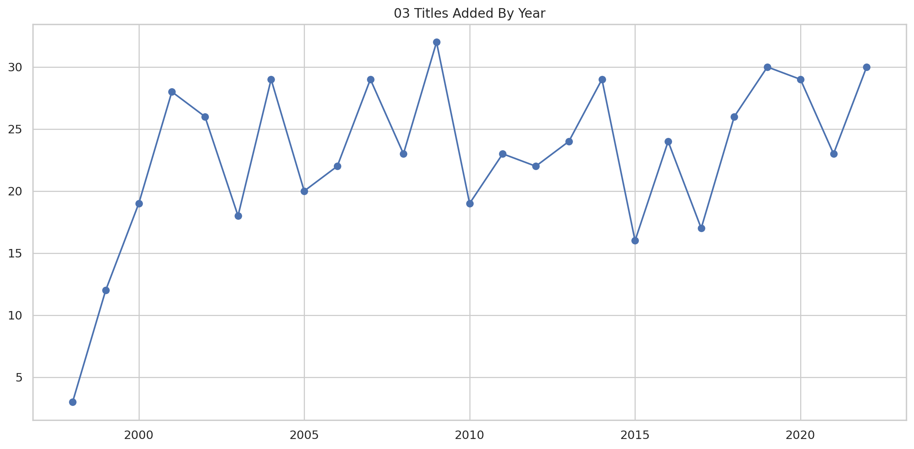
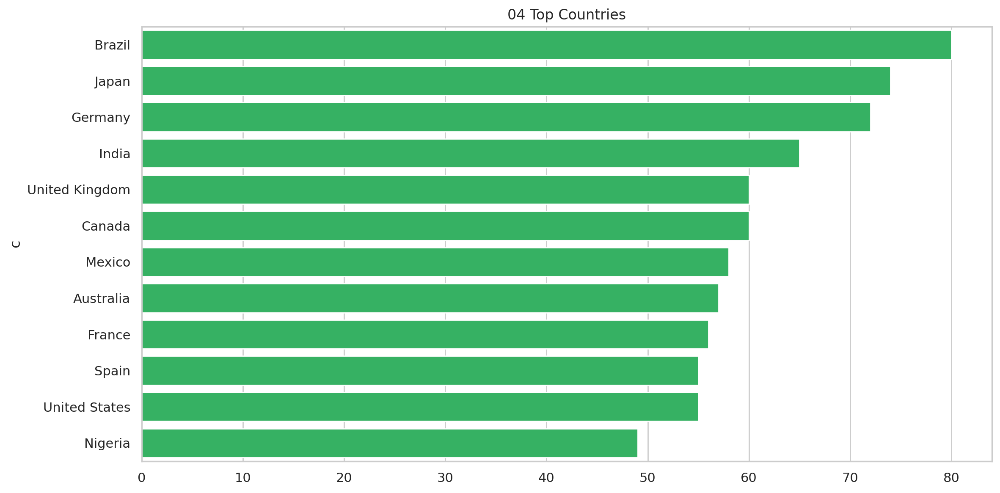
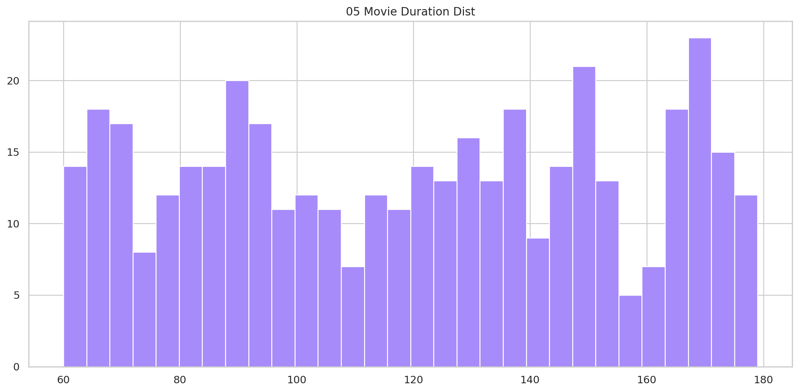
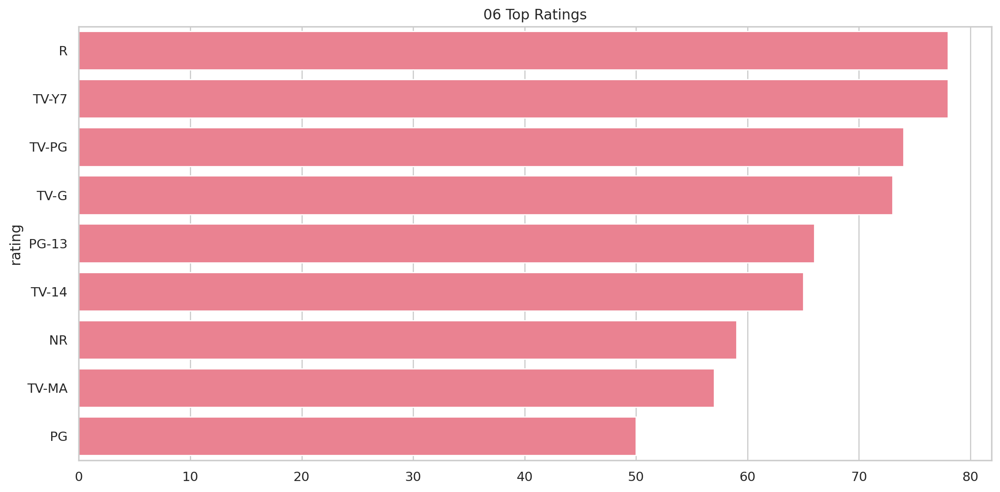
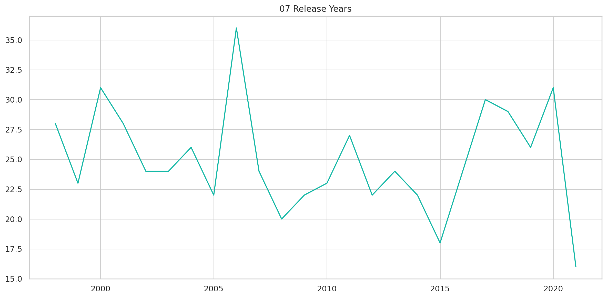
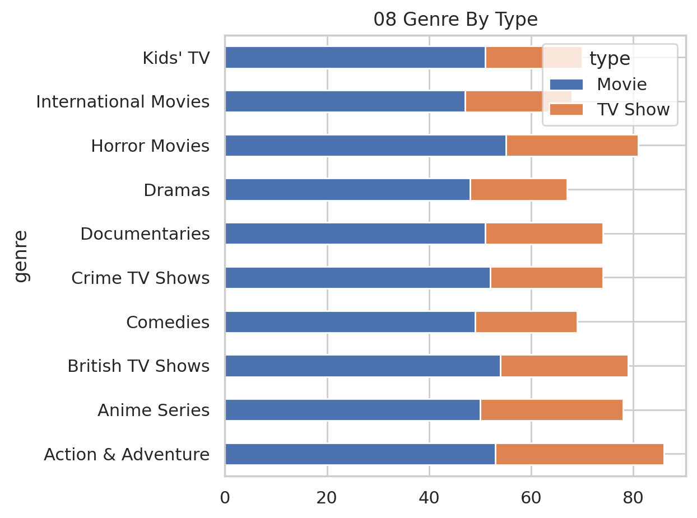

Catalog composition, release cadence, genres, and geographic content footprint.
Executive Summary
This report converts the supplied project data into decision-ready findings and supporting evidence.
Findings
The catalog has 600 titles; movies represent 68.2%.
Stand-Up Comedy is the most frequent tag (87 titles).
Brazil is the leading listed production country (80 titles).
Catalog additions peak in 2009 with 32 titles.
Median movie duration is 121 minutes.
R is the most common maturity rating.
Methodology
Original catalog records were retained. Dates and minute-based durations were parsed where available. Multi-value country and genre fields were split to evaluate tag-level composition; tag totals can therefore exceed the title count.
Visual Evidence

01 Type Split

02 Top Genres

03 Titles Added By Year

04 Top Countries

05 Movie Duration Dist

06 Top Ratings

07 Release Years

08 Genre By Type
Recommendations
Prioritize the most material measurable opportunity.
Track the core KPIs in the accompanying dashboard.
Refresh the analysis before implementing high-impact decisions.